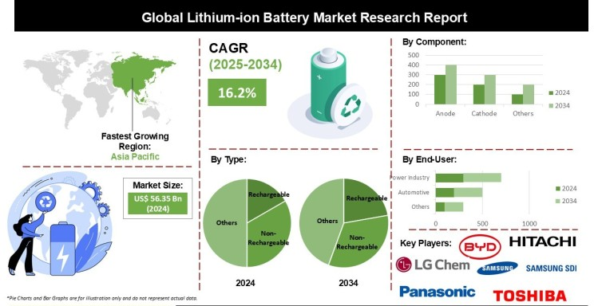
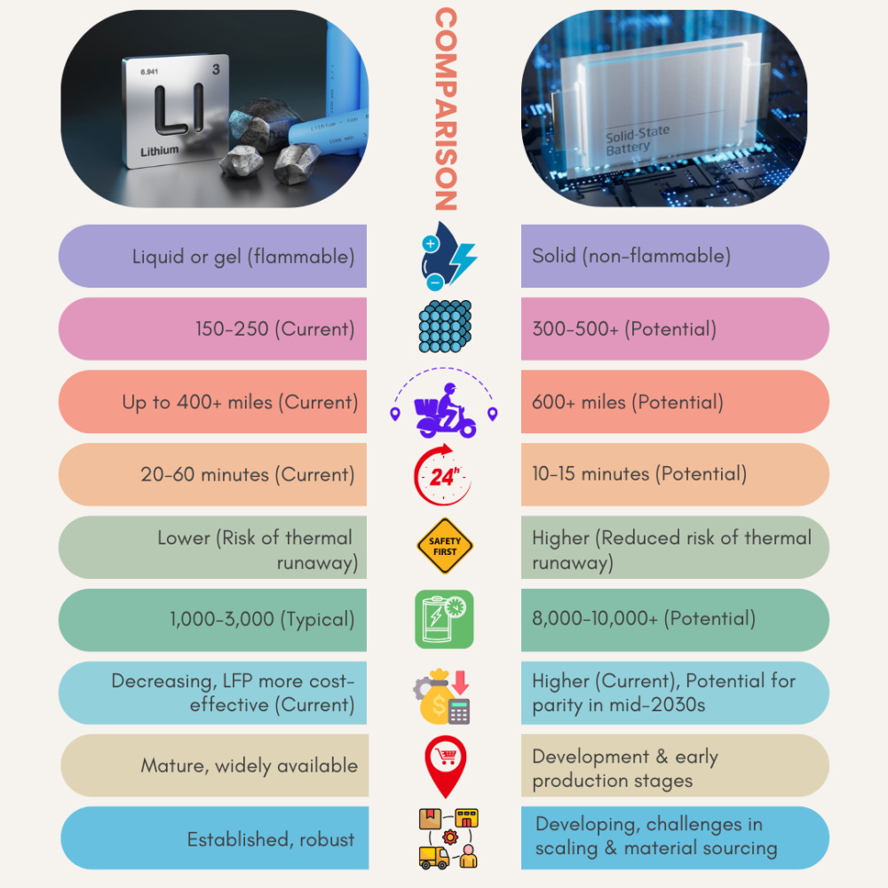
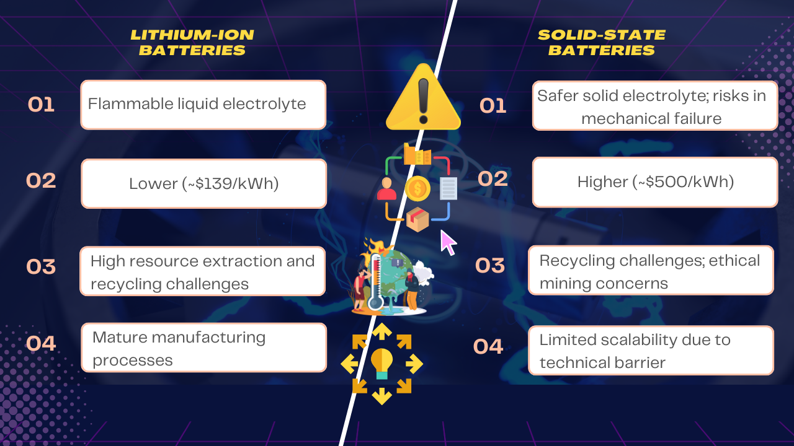
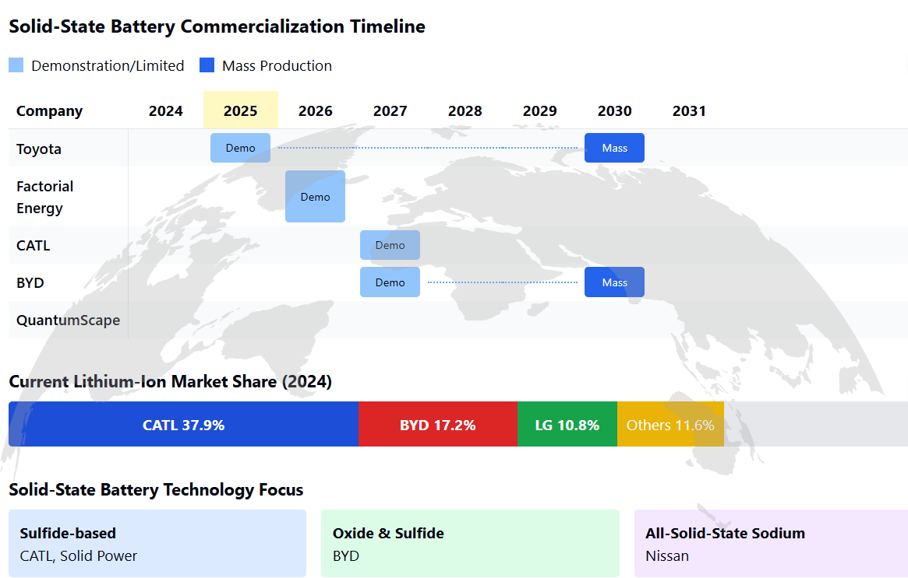

Electric vehicles (EVs) have revolutionized the automotive industry, and at the heart of this transformation is battery technology. The debate between lithium-ion and solid-state batteries is heating up, with EV manufacturers keen to determine which is the best option for the future. This article dives deep into the differences between these two battery technologies, weighing their pros and cons.
Lithium-ion Batteries: The Established Leader
A. Current Market Dominance and Recent Advancements
Lithium-ion batteries have firmly established themselves as the leading technology in the electric vehicle market, recognized for their overall reliability and efficiency. In 2024, the total global usage of EV batteries reached 894.4 GWh, with lithium-ion chemistry forming the vast majority of this figure.
The landscape of EV battery manufacturing is currently dominated by key players, with CATL holding the largest market share at 37.9%, followed by BYD at 17.2% in 2024. The overall global market for lithium-ion batteries was valued at an estimated USD 75.2 billion in 2024, and projections indicate a significant growth trajectory in the coming years.

A significant trend in battery chemistry is the increasing adoption of Lithium Iron Phosphate (LFP) batteries, which are gaining market share due to their enhanced safety and cost-effectiveness. LFP batteries are projected to reach a market value exceeding USD 88 billion by 2034 and now account for nearly half of the global EV market, driven by their inherent safety and lower material costs.
Innovations in Nickel Manganese Cobalt (NMC) and Nickel Cobalt Aluminum (NCA) chemistries continue to push the boundaries of energy density, leading to increased driving ranges for electric vehicles. For instance, Mercedes-Benz AG plans to equip its EQA 300 4MATIC in 2025 with a high-performance NMC battery. Tesla 's new 4680 cell design represents another significant advancement, aiming to achieve a 16% increase in energy density compared to previous designs.
Key Comparison

Solid-State Batteries: Promising the Next Leap
A. Current Development Status and Technological Readiness
Mercedes-Benz USA has taken a significant step forward, commencing road testing of a prototype vehicle powered by a lithium-metal solid-state battery in early 2025. This marks a critical transition from laboratory testing to real-world application.
Hyundai Motor Company is also making substantial advancements, with plans to unveil its pilot production line for solid-state batteries in March 2024, aiming for mass production around the year 2030. Similarly, BYD has set its sights on demonstrating the use of its solid-state batteries by 2027, with large-scale adoption anticipated after 2030.
CATL, a major player in the battery industry, is targeting limited production of sulfide-based solid-state batteries by 2027. Toyota Motor Corporation , a long-standing advocate for solid-state technology, aims to debut its SSBs by 2025, with mass production also expected around 2030.

Nissan Motor Corporation is actively investing in research and development, focusing on all-solid-state sodium batteries for potential use in affordable EVs. Factorial Energy has formed partnerships with major automotive groups like Mercedes-Benz and Stellantis to develop SSBs, with demonstration fleets expected as early as 2026.
Other prominent companies in the battery technology space, including Solid Power, Inc. , QuantumScape , and Samsung SDI , are also reporting significant progress in their solid-state battery development efforts. The establishment of pilot production lines by several companies indicates a move towards scalable manufacturing processes. While these advancements are encouraging, industry experts generally agree that widespread commercial deployment of solid-state batteries in EVs is still likely several years away, with many anticipating mass adoption in the 2030s.
Limitations

Strategic Considerations for EV Manufacturers
- Short-Term Reliability: Lithium-ion remains the pragmatic choice for scalable, cost-effective production.
- Long-Term Innovation: Solid-state batteries could redefine EV performance but require R&D investments to overcome material and manufacturing hurdles.
- Hybrid Solutions: Some prototypes blend small amounts of liquid electrolytes with solid-state designs to balance safety and performance during the transition.
Leading EV Battery Manufacturers and Their Focus

Outlook
Solid-state technology is projected to enter mainstream EV markets by the mid-2030s, pending breakthroughs in material science and manufacturing. Manufacturers should monitor partnerships, such as Schaeffler’s work on stack pressure reduction, and prepare for phased adoption to stay competitive. While lithium-ion remains indispensable today, solid-state batteries represent a critical pathway to overcoming range anxiety, safety concerns, and sustainability challenges.